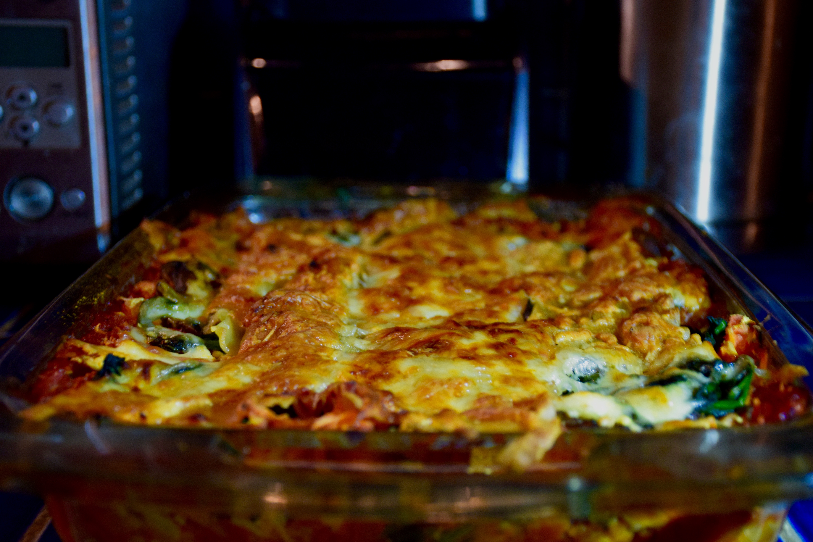

Vegan lasagna

Why should I make this?
John Joseph—the same man who spent decades fronting the Cro-Mags and Bloodclot has traded the mosh pit for the kitchen to school us all in the art of the "No Death, No Dairy" vegan lasagna.
If you think plant-based eating is just sad, wilted leaves, this dish will hit you with the force of a hardcore breakdown; it is legitimately one of the best lasagnas I've ever encountered, meaty versions included.
It's so deceptively rich that you won't even realize you're doing something good for yourself, which is a nice change of pace from the usual trash we consume.
Paired with a side salad that could actually convert a professional carnivore, this recipe is a masterclass in culinary subversion.
Make it, eat it, and contemplate the fact that you've found something healthy that doesn't taste like cardboard
Ingredients
- 6 tablespoons|90 ml organic olive oil
- 2 tablespoons Earth Balance butter
- ¾ teaspoon black mustard seeds
- ½ teaspoon ground turmeric
- ¼ teaspoon asafoetida
- ¼ teaspoon coriander
- ¼ teaspoon fenugreek
- ¼ teaspoon ground cumin
- 1 dried chile
- 2 plum tomatoes, roughly chopped
- 5 cups|1200 ml pasta sauce
- ⅓ cup|87 grams organic tomato paste
- 2 tablespoons|30 ml organic blackstrap molasses
- 1 ½ teaspoons Italian herb blend
- 1 ½ teaspoons sea salt
- Earth Balance butter, for greasing
- olive oil, for greasing
- ¼ cup|53 grams coconut oil
- 1 (11-ounce|312 gram) bag Beyond Beef crumbles
- freshly ground black pepper, to taste
- 8 ounces|225 grams Kite Hill ricotta
- 2 (8-ounce|227 grams) bags Daiya mozzarella shreds
- 1 head broccoli
- 1 large yellow zucchini
- 1 (1-pound|453 grams) boxes organic lasagna
- 1 bunch organic spinach , roughly chopped
Steps
- Make the sauce: In a large saucepan, heat the olive oil and butter over medium. Add the mustard seeds, turmeric, asafoetida, coriander, fenugreek, cumin, and chile and cook, stirring, until the mustard seeds begin to pop and the spices are fragrant, about 2 minutes. Add in the tomatoes and cook, stirring, until soft, about 8 minutes. Stir in the pasta sauce, tomato paste, molasses, Italian herbs, and salt and cook an additional 30 minutes.
- Make the lasagna: Grease a 9-by-13-inch baking dishes with butter and oil and set aside.
- Heat the coconut oil in a large skillet over medium-high. Add the beef crumbles and cook until “browned,” about 10 minutes. Season with black pepper, transfer to a large bowl, and set aside to cool.
- Once the “meat” has cooled, stir in the ricotta and ¼ cup of the mozzarella shreds. Set the meat and ricotta mixture aside.
- Bring a large pot of generously salted water to a boil. Cook the broccoli and the zucchini until tender, about 5 minutes. Drain and transfer the vegetables to an ice bath to cool. Drain again, then transfer to a large bowl or your cutting board and lightly mash or chop the vegetables roughly.
- Meanwhile, run the lasagna under water, just to remove excess starch. You want to cook the lasagna in the sauce with the vegetables so it absorbs all that flavor.
- Heat the oven to 350°F|180°C. Layer the bottom of the prepared pan with a few sheets of lasagna. Top with ⅓ of the “meat” mixture and spread into an even layer, pressing it onto the pasta. Spread about 1 ½ cups|375 ml pasta sauce over the “meat”, then top with ⅓ of the vegetables and ⅓ of the spinach. Top with ½ cup of the mozzarella cheese and another ½ cup of the pasta sauce. Top with another layer of the pasta and repeat layering for 2 more layers. End with a fourth layer of pasta and top with the remaining sauce. Cover tightly with aluminum foil and bake for 1 hour. Remove the foil and top with the remaining mozzarella cheese and bake an additional 15 minutes. Cool slightly, then serve immediately.
Home